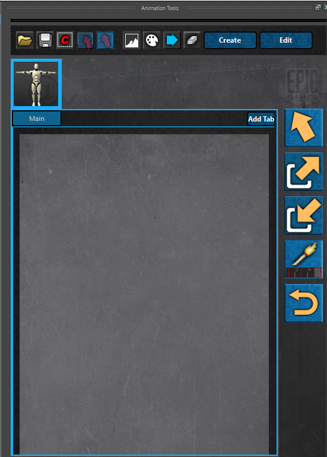

ART_AnimationUI¶
Author: Jeremy Ernst
-
class
Interfaces.ART_AnimationUI.ART_AnimationUI(parent=None)[source]¶ This class creates the main animation interface that houses the control picker and the buttons for the animation tools. This is the main interface that animators will interact with.
-
__init__(parent=None)[source]¶ Instantiates the class, getting the QSettings, writing the stylesheets, and calling on the method to build the interface.
-
addModuleToPickerUI()[source]¶ Creates an instance of ART_AddModuleToCanvas to bring up that tool, passing in modules valid to add.
-
addTab(tabWidget, bypass=False, tabName=None)[source]¶ Adds a tab to the QTabWidget for a given character to add more module control pickers to. These are sometimes referred to as “canvases”.
Parameters: - tabWidget – The QTabWidget to add a tab to.
- bypass – If not creating the “Main” tab or loading a picker from file, a tab name must be entered.
- tabName – If creating the “Main” tab or loading a picker from file, the name given to the tab that will be created.
Returns: Index of the created tab in the QTabWidget.
-
backgroundBrowse(field, gfxView)[source]¶ Opens a file browser to select a valid .png background image and then apply it to the specified QGraphicsScene.
Parameters: - field – QLineEdit for the path name to be displayed.
- gfxView – QGraphicsView to add the background image to.
-
buildUI()[source]¶ Builds the animation UI that houses the area for control pickers and a sidebar for animation tools.
-
changeBackground()[source]¶ Creates an interface allowing a user to change the background image of a picker with these dimensions: (442 x 600)
-
clearBackground(gfxView)[source]¶ Removes the background image from the given QGraphicsView.
Parameters: gfxView – The QGraphicsView whose background image to remove. See also
ART_AnimationUI.changeBackground
-
comparePickerToRig(unused, used)[source]¶ Compares the modules that are on the picker to all modules that make up the character.
Parameters: - unused – Whether or not we want a list returned of modules that are not on the picker yet.
- used – Whether or not we want a list returned of modules that are on the picker.
Returns: Returns a list of the modules based on either used or unused args.
-
createNewPicker(bypass=False)[source]¶ Create a new control picker for the given character tab. This will remove the help gif and replace it with a blank canvas that module pickers can be added to (using ART_AddModuleToCanvas).
Parameters: bypass – Whether or not to bypass the QMessageBox confirming the creation of a new picker. This is used when loading a picker from file. bypass will be set to True. Returns: returns the QTabWidget for this character’s picker. See also
ART_AddModuleToCanvas
-
editPicker()[source]¶ Makes all picker items editable again, making them selectable, movable, scalable, and rotatable.
-
exportMotion()[source]¶ Instantiates ART_ExportMotionUI to bring up the tool for exporting animation out to various file formats.
-
findAllPickerItems()[source]¶ Finds all modules on the picker. Used mostly be the load picker function. :return: Returns a list of picker data that includes for each item, the module the picker is for, the item in memory, and the nice name.
See also
ART_AnimationUI.loadPicker
-
findCharacters()[source]¶ Finds all assets in the scene built with ARTv2, and creates a picker tab for each one in the animation UI.
-
getButtonColors()[source]¶ Gets joint module picker button colors, which can be edited by the user.
Note
Currently, only the joint module supports users being able to change the button color.
Return type: A list of lists where the inner list contains the following data for each joint module found: Return [0]: The name of the module this picker interfaces with. Return [1]: The color of the picker button. Return [2]: The name of the control this button selects.
-
getComments(saving=False)[source]¶ Gets any comment boxes that were created on any picker tabs and returns a list of those items. :param saving: Whether or not this function is being called from savePicker, in which case, it will disable edits.
Return type: A list of lists where the inner list contains the following data for each comment box found: Return [0]: The QRect of the comment box, which contains the box dimensions and the x/y coordinates. Return [1]: The color of the comment box Return [2]: The name of the tab the comment box is under. Return [3]: The text label of the comment box.
-
getCurrentScene()[source]¶ Gets the QGraphicsScene of the current QGraphicsView, which is gotten by calling on self.getCurrentView.
Returns: Returns the QGraphicsScene under the current QGraphicsView. See also
ART_AnimationUI.getCurrentView
-
getCurrentView()[source]¶ Gets the current QGraphicsView based on the currently selected character tab, and the currently selected picker tab of said character.
Returns: Returns the QGraphicsView that is currently active.
-
getModuleInst(module)[source]¶ Takes the given module and instantiates it, returning the memory address for the created instance.
Parameters: module – The name of the module to instantiate. Returns: The instance of the instantiated module in memory.
-
getPickerTabs(saving)[source]¶ Finds and returns all picker item data, like transforms, scale, x/y coordinates, mirrored status, parent tab, and controlled module.
Parameters: saving – Whether or not this function is being called by savePicker, in which case if it is, it will then make sure that the picker items are no longer editable. Return type: A list of lists, where each inner list has the following data for a picker item: Return [0]: Name of tab the picker item belongs to Return [1]: Picker item transforms Return [2]: Name of module picker belongs to (which module controls it interfaces with) Return [3]: Whether or not the picker item is mirrored. Return [4]: Whether or not the picker is a sub-picker, like fingers or toes. Return [5]: And if not saving, the memory address of the picker item.
-
gfxViewMouseMove(view, event)[source]¶ Override event that captures a mouse move when in the passed in QGraphicsView and changes the displayed size of the QRubberBand based on the origin position and the current position, drawing a QRect (if in drag select or comment box mode.). It also finds any items inside of that QRect (picker buttons, etc).
Parameters: view – the QGraphicsView to detect mouse move events in and check for items in.
-
gfxViewMousePress(view, event)[source]¶ Override event that captures a mouse press when in the passed in QGraphicsView and displays the QRubberBand if in drag select or comment box mode.
Parameters: view – the QGraphicsView to detect mouse press events in.
-
gfxViewMouseRelease(view, event)[source]¶ Override event that captures a mouse release when in the passed in QGraphicsView and hides the QRubberBand if it was visible. If in comment box mode, this release event will also create the comment box with the dimensions and position of the start point of the mouse press, and the QRect from the mouse move.
Parameters: view – the QGraphicsView to detect mouse release events and to add comment boxes to.
-
importMotion()[source]¶ Instantiates ART_ImportMotionUI to bring up the tool for importing FBX animation onto the rig.
-
loadPicker(filename=None)[source]¶ Loads a .picker file and builds the picker according to the file data. :param filename: The path of the picker file to gather data from.
-
matchOverRange()[source]¶ Instantiates ART_MatchOverRangeUI to bring up the tool for matching different rig type over a frame range for selected modules.
Example: Matching the IK leg rig controls to the Fk leg rig controls over a frame range of 0-30.
-
mirrorChildTextItems(children)[source]¶ Mirrors any QGraphicsSimpleTextItems text if the parent picker was mirrored, so that the text is correct. :param children: List of child items (QGraphicsSimpleTextItems) of a pickerBorderItem or a pickerButton.
-
movePickerToTab()[source]¶ Creates an instance of the ART_MovePickerToTabUI tool, passing in all valid module pickers that could be moved.
-
pickerTabChange()[source]¶ Called on when a tab is changed on a given character’s picker, if the remove modules from canvas UI is open, it will be closed.
Todo
This function could eventually be changed to simply refresh that UI with the new information.
-
removeModuleFromPickerUI()[source]¶ Creates an instance of the ART_RemoveModuleFromCanvas tool, passing in modules valid to remove.
-
resetRigCtrls()[source]¶ Instantiates ART_ResetModulesUI to bring up the tool for resetting transformations on a selected modules. Also known as “zeroing out”.
-
savePicker()[source]¶ Save the picker data to a .picker file. The main picker data is actually gathered by self.getPickerTabs, self.getComments, and self.getButtonColors.
See also
ART_AnimationUI.getPickerTabs, ART_AnimationUI.getComments, ART_AnimationUI.getButtonColors
-
selectAllCtrls()[source]¶ Instantiates ART_SelectControlsUI to bring up the tool for selecting specified rig controls for selected modules.
-
setButtonIcon(movie)[source]¶ Sets the icon of the matchRangeBtn to the next frame in the passed in movie. Note: This was a test function to see if animated gifs could be used as buttons.
Parameters: movie – The movie whose frame to change.
-
toggleDragState()[source]¶ Toggles selection interaction modes within the QGraphicsScene. The three different modes are normal select, drag select, and comment box mode. This will set the dragMode of the QGraphicsView to the currently selected state, along with switching icons to show selection status.
-